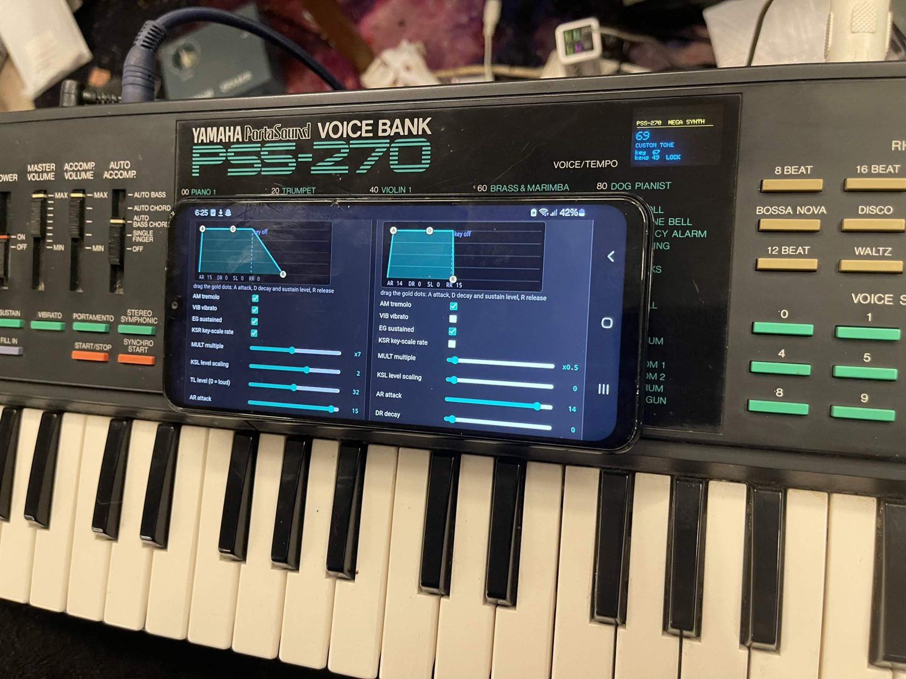
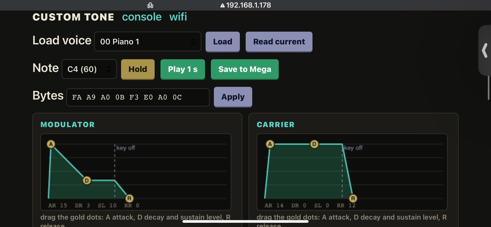
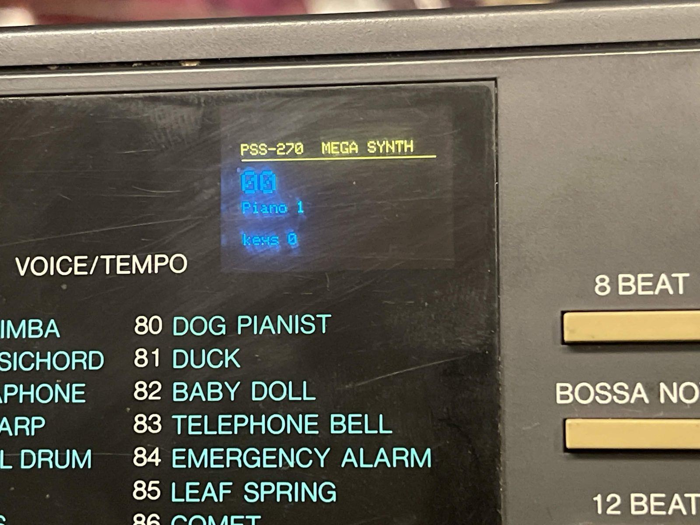
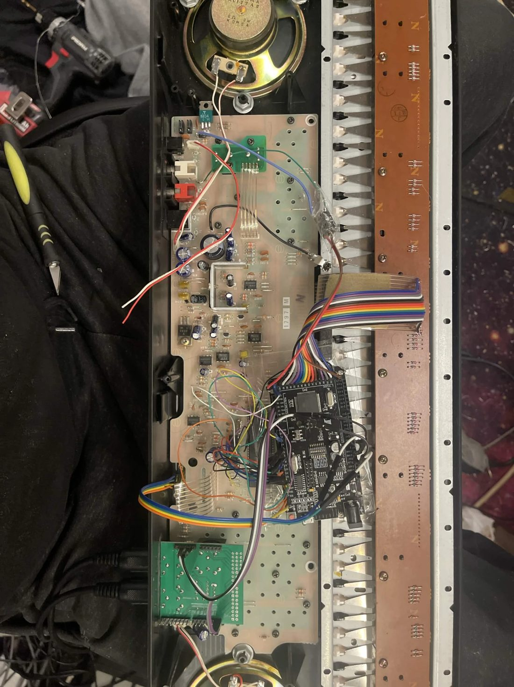
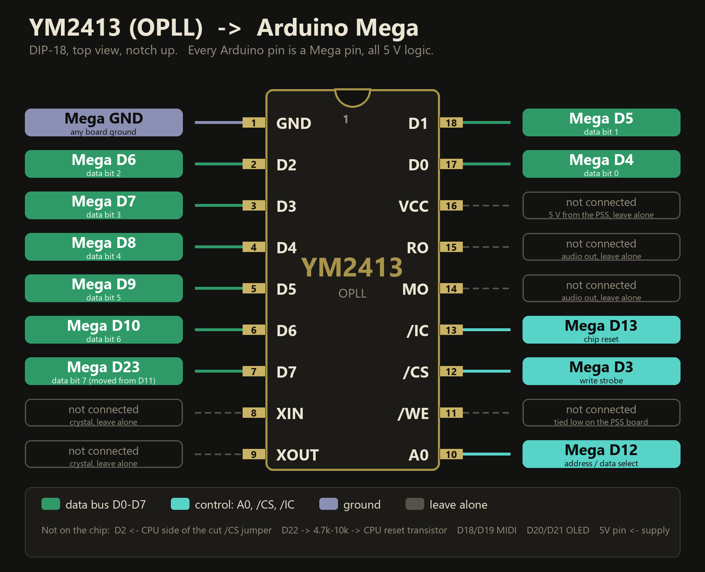

Yamaha PSS-270 mod: PSS-270 Mega DX
A new brain for the Yamaha PSS-270 (PSS270, PortaSound): an Arduino Mega + ESP8266 takes over the YM2413 FM chip and the keyboard. MIDI in and out, an arpeggiator, a key menu and a live FM tone editor with draggable envelopes on your phone. The only change to the keyboard is one cut jumper and one reset wire.

What it does (tested on real hardware)
| Keys | all 49 keys learned once, 9-note polyphony |
|---|---|
| MIDI | in and out on a MIDI shield, channel 1-16, transpose, thru |
| Voices | the PSS-270's own 100 voices (68 exact, 32 simplified) plus the YM2413's 15 ROM instruments |
| Arpeggiator | up, down, up-down, random, as played, latch, tempo, 1-4 octaves |
| Key menu | hold the two highest keys, then the three lowest white keys move and select; settings saved |
| FM tone editor | every YM2413 custom-tone setting live from a phone: sliders, draggable envelopes, randomize and mutate |
| WiFi | joins your router, or Local mode (its own WiFi, no router); the address shows on the OLED |
| Updates | both chips update over WiFi, no USB |
Played live in three jams in front of an audience.
New in the latest firmware (not all ear-tested yet)
Software features on top of the chip: a fake filter (cutoff, resonance, filter envelope) built from the FM modulator level and feedback, vibrato and tremolo with delay, pitch envelope, glide, a software volume envelope, detune and octave layers, tone sweep, odd tunings (just, pythagorean, werckmeister, maqam rast and bayati), chord memory, a Euclid arpeggiator with swing and humanize, and MIDI knobs for cutoff, resonance, attack and release.
Photos




Build it
Parts: a WiFi Mega (ATmega2560 + ESP8266), a MIDI shield, a 0.96" SSD1306 OLED, a 5 V supply and jumper wires. The full wiring, the AliExpress parts list and the flashing steps are in the GitHub README.
The Yamaha voice data is not included; the repo explains how to fill it in from your own keyboard.